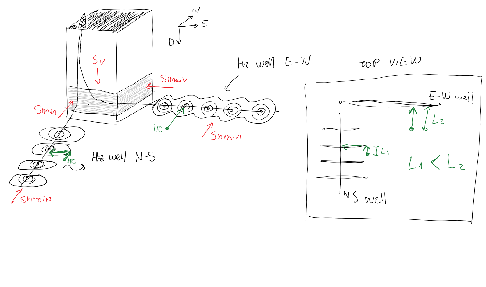
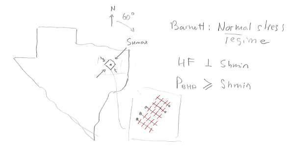

Next:
2.4 Problems
Up:
2.3 Horizontal stresses
Previous:
2.3.4.3 Reverse faulting stress
Contents
2
.
3
.
5
Ideal orientation of open-mode fractures
Figure 2.24:
Ideal orientation of open-mode fractures.
Figure 2.25:
Geometry of open-mode fractures according to wellbore orientation.

Figure 2.26:
Ideal orientation of horizontal wellbores in the Barnett shale.
